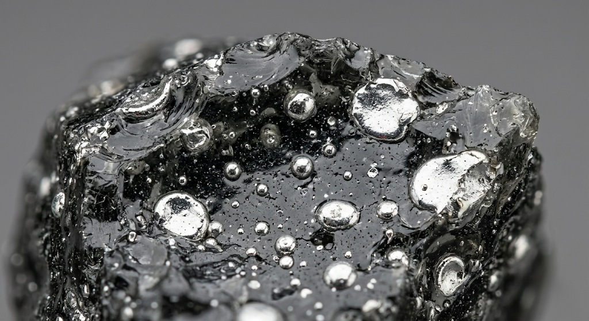

During tapping and casting, perfect phase separation is impossible because of hydrodynamic processes. In basic oxygen steelmaking, iron prills are always present in the final slag, which means part of the metal is lost. The main cause is the vortex forming in the liquid bath, which draws slag into the steel stream.
In copper slags, losses come from incomplete separation of the sulphide phase from the silicate melt. In silicomanganese smelting, part of the manganese is lost with slag and dust. In the upper zones of the furnace, the oxide melt suppresses gas cavity formation, which promotes carry-over of alloy prills into the slag.
A common misconception is that metal is present in slag only as oxides; a significant share is mechanical inclusions and scrap. Visual assessment is not reliable: the actual quantity depends on the physics of the specific material and is established only by testing a sample.

R. Keren works with all secondary metallurgical materials. The processing route is determined by the properties of the specific material and confirmed in the laboratory during project work — a working step, not a restriction on the range of materials.
Every project starts with data, not assumptions.
Related
Total content vs metallic phase · Magnetic separation · The fine fraction · Wet sludge · Representative sampling · Limits of a plant laboratory · Assessing a dump: the tests
Equipment and areas of responsibility · All industry questions